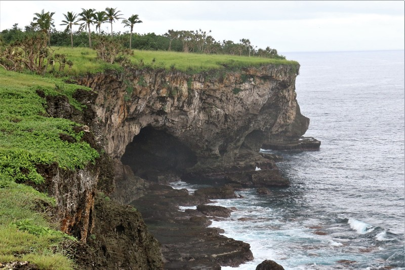
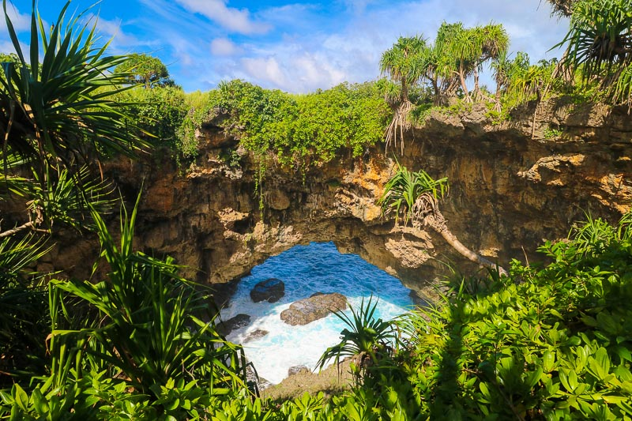

Tsunami Rock
 Hufangalupe is a beautiful natural rock bridge on the southern coast of Tongatapu, Tonga. It was formed by waves carving through limestone cliffs, creating a breathtaking view of the ocean. The site is a peaceful place to enjoy nature.